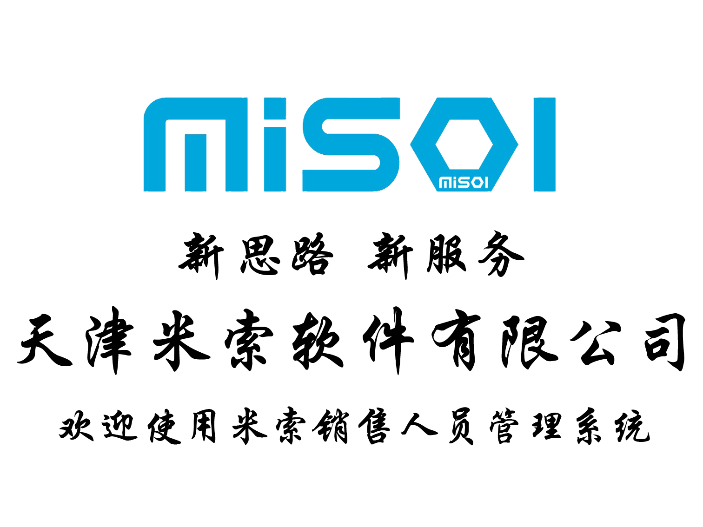
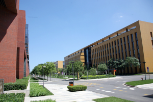

|  |
天津米索软件有限公司(简称MISOL)，创立于2013年1月，注册资本2000万元，位于天津市高新区软件园，是一家以研发、生产医疗信息化相关产品为主的软件企业。经过实践的验证，已迅速发展成为天津市高端医疗软件企业，并被市科委评定为“天津市中小型科技企业”。 我公司目前主要以区域医学影像诊断传输与教学系统（MISOL PACS）的研发和应用推广，其中包括医疗数据云存储、特设的远程诊断工作站、自动异地备份和相关的解决方案。不断努力和技术沉淀，我们还将提供智能人性化的操作体验和高可靠性的安全保障，同时无限的设备连接，以及多厂商的设备兼容能力。公司还完成了电子病历管理系统、电子健康信息系统、显微镜图像信息管理系统的开发，为区域医疗、医院信息化的扩容和并蓄提供了可持续提升的广阔平台。标志着公司在规范化发展的道路上迈出了重要的一步，并为做大企业规模、提高经济效益，实现企业战略化经营格局奠定了良好的基础。 公司以科技引领健康，新思路、心服务为指导思想，与人为本为指导原则，坚持以服务为导向，积极拓展目标区域市场，稳定和扩大市场占有率，逐步形成以医疗信息系统软件研发、生产、销售、技术服务的“四位一体”式经营格局；通过不断创新和完善，提升员工素质，增强员工和客户的满意度，在业内树立良好的口碑和品牌价值，促进企业持续、稳定、快速、健康发展。  联系方式 官方邮箱 官方网站
|